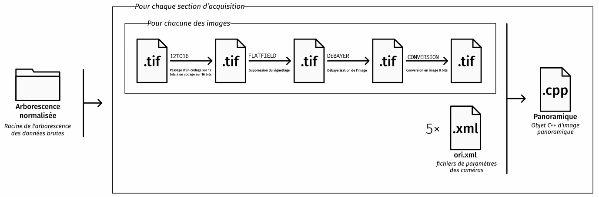
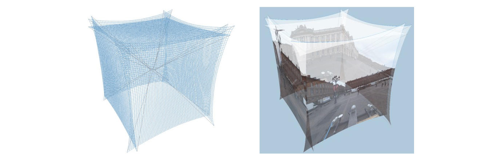
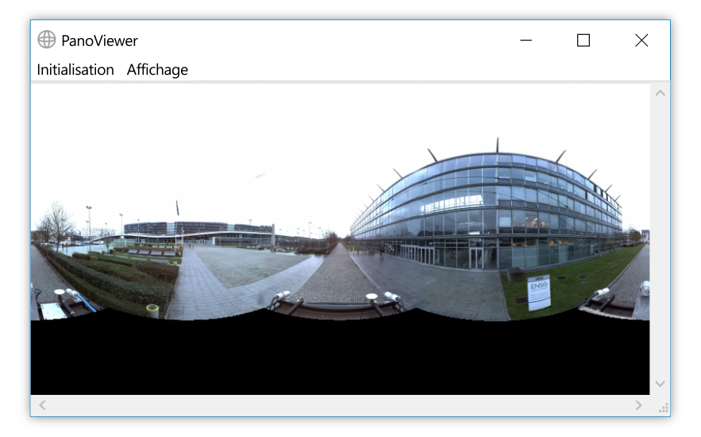

Mobile mapping : visualisation d'images panoramiques couleur à partir des images brutes acquises par Stéréopolis
Commanditaire : Jean-Pierre PAPELARD (DIAS / MATIS)
Emmanuel BOURASSIN - 14 décembre 2018
Sommaire
- Contexte et objectif
- Analyse fonctionnelle
- Analyse technique
Contexte et objectif
Sommaire
- Contexte et objectif
- Analyse fonctionnelle
- Analyse technique
Stéréopolis

Panoramique

Analyse fonctionnelle
Sommaire
- Contexte et objectif et objectif
- Analyse fonctionnelle
- Analyse technique
Gestion des données
- Images brutes
- Données de calibration des caméras
- Données de trajectographie
Génération de la panoramique

Correction des distorsions

Visualisation de la panoramique

Analyse technique
Partie 3
- Contexte et objectif et objectif
- Analyse fonctionnelle
- Analyse technique